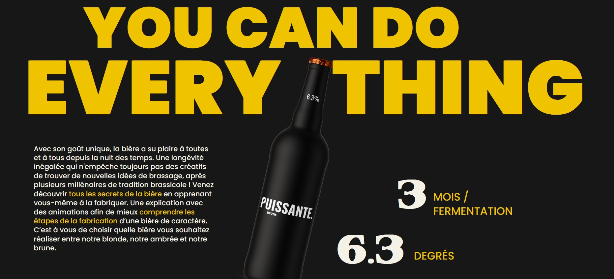

Caio Castro
|
I Étudie actuellement : BUT MMI I Apprends Javascript I Merci de votre visite I
I Étudie actuellement : BUT MMI I Apprends Javascript I Merci de votre visite I
Dans mon deuxième semestre de ma formation MMI j'ai participé à un projet de vulgarisation de bière, dans ce projet on a dû effectuer plusieurs tâches comme, la stratégie de communication de notre entreprise de vulgarisation, puis on a dû faire une identité visuelle, une vidéo pour promouvoir notre entreprise et enfin un site web code en HTML/CSS/JS/PHP.
Au cours de mon troisième semestre, j'ai également travaillé sur un projet de montage vidéo dans lequel nous devions créer une animation à l'aide d'un programme 3D puis éditer à l'aide d'Animate, After Effect et Premiere Pro.

Dans mon troisième semestre de ma formation MMI j'ai participé à un projet sur l'infini où on a dû effectuer des recherches sur les arts abstraits, creer un musée virtuel où on pourrait montrer les oeuvres de nos groupes et celui des autres, pour cela on a dû faire une stratégie de communication, un benchmark, une identité visuelle, une oeuvre (cette oeuvre est une vidéo sur l'Errance) et un site web code en HTML/CSS/JS/PHP en Français et en Anglais, on a aussi du effectuer une copie de ce site mais en format WordPress.
Avant de commencer avec la programmation je fessais beaucoup de montage vidéo, voici mon lien Youtube.
Lien vers ma chaine YoutubeLe premier projet que j'ai créée c'est une calculatrice en utilisant HTML/CSS et Vanilla JavaScript.
Lien vers la calculatriceBricorama est une entreprise française qui vend des articles de maison, des articles de jardin, des articles de camping et bien plus encore. J'ai travaillé là-bas en 2018 dans le cadre d'un stage, ma mission était:
Ubeeqo est une entreprise internationale qui loue des voitures, j'y ai travaillé en stage en 2018, ma mission là-bas était: